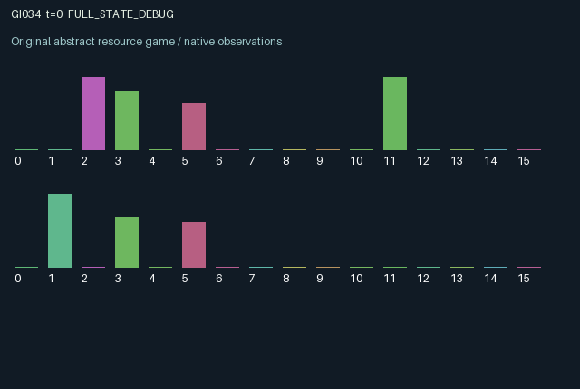

GI034 / LEGACY_ARRAY
astra-d2-00034: two-party setup latches and expiring service tickets
2 agents5 actions16 observation columns32 original horizonRuntime: PASS
Release verification episode
Untrained uniform legal actions. Actual JAX state sampled along the full original episode; full-state debug camera. No human performance or learning claim.

Run this game
crucibles play --game 34
Start Python locally, then open the address printed by the terminal. Installation, multiplayer, takeover and keyboard controls →
Objective, rewards & ending
Exact task contract
{
"termination": "Original kernel t >= 32; see mechanism and source"
}Declared per-step reward bounds: -1.0 to 1.0. Observability: source_defined.
Rules
Original mechanism document (historical status wording retained)
# astra-d2-00034: two-party setup latches and expiring service tickets This is an original parentless source proposal under work request `astra-d2-initial-00032-00035-a00`. It draws on generic machine scheduling, mutual consent and reservation expiry. No benchmark source, other candidate or experimental score was read. Its structural distinction and scientific usefulness await the separate experimenter review. Each agent has one private job, with a binary required machine mode, value, deadline and processing progress. A shared machine supplies at most one unit of work per transition, and a job needs two units before paying out. Agents maintain public setup latches. When the two latches agree, that agreement changes the machine mode; when they disagree, the machine retains its existing mode. One participant can therefore preserve or block a future reconfiguration without directly rewriting the other's job. The five legal actions are: 0 wait; 1 book or renew a four-step service ticket; 2 set one's setup latch to zero; 3 set it to one; 4 attempt service. A service attempt needs an unexpired old-state ticket, matching job mode and a ready machine. If both agents are eligible, a public priority token selects one, then moves to the other after actual service. Tickets age every transition, including non-service transitions, and reset on job replacement. Booking cannot also execute service in the same step. A changed machine mode blocks service in the transition that changes it and in the following transition through a one-step stored cooldown. The machine can still run its retained mode while latches disagree, unless it is cooling down. Jobs complete after their second actual service unit; otherwise a job at deadline one expires. Completion takes precedence over expiration at that final service opportunity. Replacement jobs are drawn only into state entries marked complete or expired; the explicit step key supplies the random replacement candidates. This does not condition any source authoring on outcomes. Rewards are delayed job-value payments, minus expiration losses and explicit service, reservation and setup costs. Per-step clipping to [-1, 1] defines a bounded utility cap. The other agent's latch can obstruct required setup, its service request can consume the only current slot, and its service updates the shared priority token. Reservation renewal, coordinated setup and urgent private jobs consequently interact over several steps. This describes potential coordination and conflict, not an empirical learning result. Observation columns are: clock; role; own job mode; own normalized deadline; own normalized progress; own value; own ticket; other ticket; own latch; other latch; current machine mode; own priority indicator; cooldown; own last completion/expiration outcome; other cumulative completions; own cumulative completions. Opponent job mode, deadline, value and processing progress are private. Public latches and requests can indirectly communicate intended use. The interface remains A2/O16/U5 and terminates after exactly 32 transitions without resetting the terminal state. Syntax parsing alone is the author's check. Compiler success, runtime validity, mechanism eligibility, duplicate status and learning effectiveness are all unknown at handoff and require experimenter2's separate work.
Commands
0Action 0; see mechanism and source
1Action 1; see mechanism and source
2Action 2; see mechanism and source
3Action 3; see mechanism and source
4Action 4; see mechanism and source
Roles & abilities
agent_0 Original legacy agent; see mechanism and source
agent_1 Original legacy agent; see mechanism and source
Observation permissions
Training receives only the original observation rows. Role cameras use declared visibility; debug cameras are explicitly marked. Local benchmark records log debug exposure and role takeover history.
Exact observation layout
[]
Entity visibility & attributes
[]
Actual verification & provenance
Per-game execution receipt
{
"game": "gi034",
"status": "PASS",
"verification_revision": 2,
"source_sha256": "f584602523a24987139e008f98bad0814af20b35deefd803c22cece1b5374479",
"seed": 20261101,
"runtime": {
"jax": "0.4.38",
"numpy": "1.26.4",
"devices": [
"TFRT_CPU_0"
]
},
"dimensions": {
"num_agents": 2,
"observation_size": 16,
"num_actions": 5,
"max_steps": 32
},
"checks": {
"eager_reset": {
"status": "PASS",
"seconds": 1.1572544574737549
},
"observation_spaces_legal_masks": {
"status": "PASS",
"seconds": 0.22303009033203125
},
"eager_step": {
"status": "PASS",
"seconds": 0.889718770980835
},
"jit_reset": {
"status": "PASS",
"seconds": 0.6239759922027588
},
"jit_step": {
"status": "PASS",
"seconds": 0.4569556713104248
},
"eager_jit_integer_parity_float_measurement": {
"status": "PASS",
"seconds": 0.0010023117065429688
},
"jit_vmap_reset": {
"status": "PASS",
"seconds": 0.5988540649414062
},
"jit_vmap_step": {
"status": "PASS",
"seconds": 0.7304763793945312
},
"outer_autoreset_api": {
"status": "PASS",
"seconds": 0.9968531131744385
},
"full_original_horizon_episode_and_render": {
"status": "PASS",
"seconds": 0.9879565238952637
}
},
"human_scores": null,
"browser_controls": "PENDING",
"failures": [],
"elapsed_seconds": 7.355815172195435,
"float_parity_max_abs": 0.0,
"numerical_parity": "EXACT",
"raw_terminal_absorbing": "NOT_PART_OF_ORIGINAL_LEGACY_CONTRACT",
"terminal_outer_reset": "PASS",
"episode_steps": 32,
"scripted_random_returns": [
-1.2807290432974696,
-1.2458617519587278
],
"terminal": true,
"demo_information": "FULL_STATE_DEBUG",
"demo_frames": 33,
"render_roles_checked": 2
}Chromium control verification
{
"game": "gi034",
"status": "PASS",
"human_scores": null,
"engineering": true,
"checks": [
"catalog_selected_and_real_native_reset",
"dom_queue_and_native_step",
"second_participant_ownership_and_native_joint_step",
"all_roles_individually_controllable_no_role_cap",
"explicit_debug_camera",
"release_to_pure_ai_without_reset"
],
"ui_sha256": "15b5861d23b3c42811865c954d5a988280bbfd21cf8e93754be2437a027158c5",
"seconds": 4.581520080566406
}Original identity and file hashes
{
"id": 34,
"key": "gi034",
"title": "astra-d2-00034: two-party setup latches and expiring service tickets",
"summary": "",
"tags": [],
"family": "legacy_array",
"dimensions": {
"num_agents": 2,
"observation_size": 16,
"num_actions": 5,
"max_steps": 32
},
"source_sha256": "f584602523a24987139e008f98bad0814af20b35deefd803c22cece1b5374479",
"manifest_sha256": "bdf5c822e0a8d8e3d18e52cc844fbf6d3e9ab16ffc9bc297890973f7c7d98efc",
"files": [
{
"file": "candidate.py",
"sha256": "f584602523a24987139e008f98bad0814af20b35deefd803c22cece1b5374479",
"bytes": 5375,
"origin": "work/exp_2/astra_generation/discovery_v2/initial/candidate_00034/attempt_00/candidate.py"
},
{
"file": "mechanism.md",
"sha256": "6539f838e2258b71bbf3cdb4fe4873b875a85cd9d64a85a51c5f4c2564a4ef58",
"bytes": 3356,
"origin": "work/exp_2/astra_generation/discovery_v2/initial/candidate_00034/attempt_00/mechanism.md"
}
],
"original_status": "LEGACY_SOURCE",
"original_saved_replay": false,
"release_validation": "PASS",
"human_scores": null,
"browser_validation": "PASS"
}